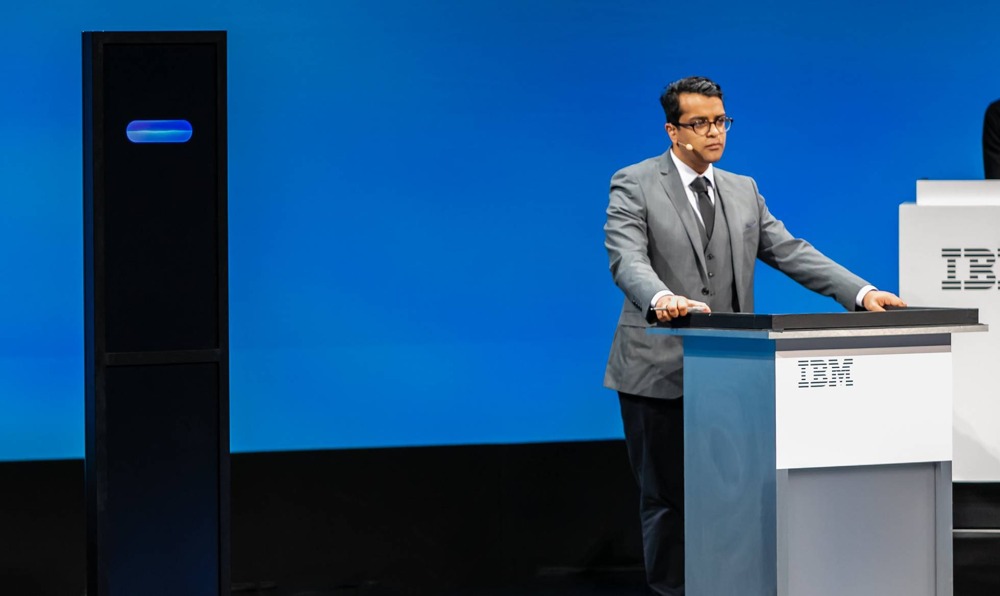

La industria del eufemismo: quién tiene y cuánto cuestan tus datos
Cientos de empresas desconocidas controlan desde la sombra uno de los grandes negocios de la era de internet.
Los discos SSD, una versión mejorada y más fiable de los discos duros tradicionales
Probamos cinco modelos portátiles con una capacidad mínima de 240 GB y un coste inferior a 150 euros.
Algoritmos con forma de intuición
Quizás las próximas elecciones sean las últimas en las que decidamos el voto a partir de intuiciones generadas desde una lógica esencialmente humana.
Llega el primer robot tertuliano, y es abrumador
El Proyecto Debater de IBM discute con un campeón mundial de oratoria y estuvo a punto de ganarle.
La inteligencia artificial ya puede diagnosticar dolencias infantiles con la precisión de un pediatra
Un equipo internacional desarrolla una máquina capaz de analizar las condiciones de salud de miles de niños gracias al potencial del aprendizaje automático.